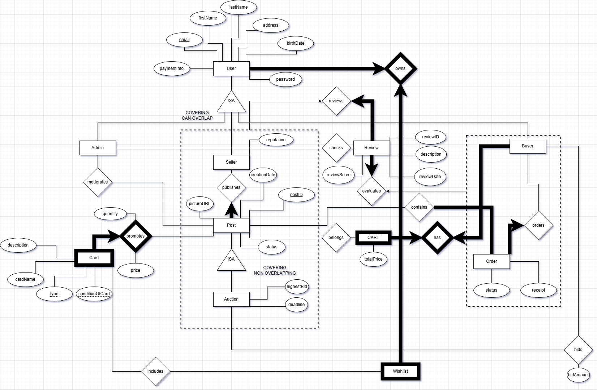

My colleagues and I developped and built a database application for a real-world domain.
we designed an ER schema, created a database using SQL and DB2, populated our database with data.
In the user-friendly Java interface we have developped application programs for our users.
These applications allow users to create or update their profile, create a new post (used to sell cards),
Display Sellers and their average rating, update review on purchased cards. Any changes made through the
Java UI are connected to the DB2 database through SQL. From this database, I was also able to export the result
to make visualizations such as the bar graph and pie chart in the linked github.

My research in collaboration with Kai Wang Lab was focused on a relatively unexplored neural network (NN) called Kolmogorov-Arnold Network (KAN) in python and pytorch.
The research proposal detailed the use cases for machine learning (ML) KAN models in quantum optics. The research itself consisted of analyzing performance
data from the models differently sized, formatted, arranged data. Once all the data and mechanics of these KAN models were understood, I presented my insights
to the lab members and interested external researchers to propose applications in quantum optics. Wigner function reconstruction was the chosen application.
I created a KAN model to take as input data points from a known, complex multivariable function and output an easy to understand, univariate function.
The reason why this is so important was because in quantum optics, often times situations can be too complex for humans to understand, thus reducing the
complexity of the situation helps researchers understand the optics better.

Due to confidentiality, I cannot share the dashboards or visuals I created during my internship at AbbVie Canada, but I can describe the work I completed.
My responsibilities included building market share graphs, creating visualizations (bar graphs, plots, pie charts) for HCPs, and developing dashboards to help cross-functional teams easily
track essential information. All of this work was done through the use of Power BI, Excel, Smartsheets, Azure
One of my proudest accomplishments was automating the monthly market share reporting process. I was tasked with designing their professional, trademark graphs in another
platform they recently acquired, Foundry. I created a system to automatically grab unprocessed data from Excel, analyze the data into useful values, and add them to their
respective plots while maintaining the 16 months of market shares. I was able to significantly reduce the time spent by BI analysts creating graphs and reduce the time to
deliver insights to shareholders.
Another proud accomplishment was that my team and I were able to deliver specialized information/insights to shareholders. One such experience was detailing how
our in-field team for a specific drug was not targeting the correct physicians. I learned this by using H1 (a platform they
had never used before) to acquire more recent and accurate data, and exported queried data into Excel and Power BI to
analyze and present insights as to why they were not optimized in their choices.

Under the supervision of Siamak Ravanbakhsh, my research group took an interest in classifying and segmenting cancerous cells across the body.
Each of us took one region of the body, and analyzed data from histopathological images of that region's cells. Using a Python and Pytorch,
we trained models capable of classifying whether the image contained no cancerous tumors, or if it did contain cancerous tumor(s), then classify
the image by the name of the tumor. For instance the lung images I was responsible for had multiple types of cancerous tissue in them. My model was
able to classify them with 96.7% accuracy. Once classified, we then attempted to segment the image to locate the cancerous tissues. This process was difficult
depending on the quality of the images. In my lung region, segmentation was a success. We wrote a research paper documenting our work and presented our findings.

I entered an AI competition to determine who can create an AI agent to best play Reversi (otherwise known as Othello). Out of 200+ competitors, I placed
10th in the competition. Note that this competition involved heavy usage of UI and GUI. My AI agent was also capable of defeating any human who attempted to play against it. The rules of the competition were to create an AI agent who understands the rules of the game, and must make moves in under 2.0 seconds.
If a legal move is not made within that timeframe, the Agent loses their turn. The board size would also change randomly, from square dimensions from 6x6 to 12x12. In the classic version,
the 8x8 board has about 10^28 legal positions. For a 12x12 board my AI agent could be faced with any of 10^68 possible states. I needed to create an agent which had the best heuristics and policy for a time-efficient agent, as this many possibilities
require my agent to analyze exponentially more data. Note that for the competition, this limit was chosen because it's impossibe to perfectly check each state even in the smallest board size in that time.

This section is for visualizations that I've made specifically for lab coursework. The above graph, and others I've made can be viewed in
the github linked to this page. These will mostly be graphs, plots, histograms, fitted data. All these visualizations have been made to analyze data, or present analyzed data
clearly in a way an interested reader could understand.
Note that I have other visualizations in other, more involved, projects. Though if you're interested in seeing even more than my other projects, feel free to access the linked github.